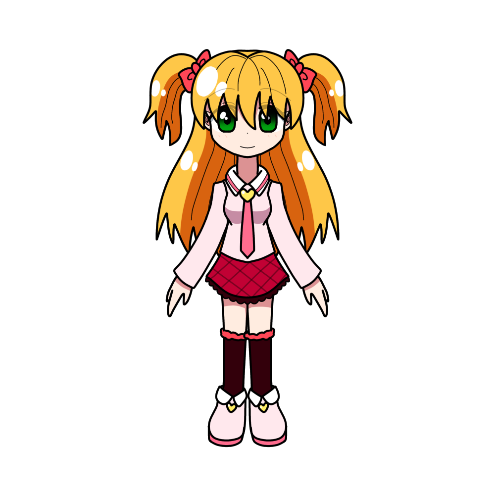

かりん・ティーフィ・ベロニャ
概要
プロフィール
| 種族 | 宇宙人と魔女のハーフ |
|---|---|
| 性別 | 女性 |
| 年齢 | 101歳（三進数） |
| 誕生日 | |
| 身長 | |
| 血液型 | |
| 出身 | |
| イメージカラー | |
| イメージCV |
人物像
ファニリシアから少し離れた惑星の住民、
パボラ星人の父と、ファニリシアの魔女の母から生まれた女の子。
ちなみに「かりん」という名前は、父がファニリシアにやって来て
最初に好きになった食べ物である「かりんとう」が由来。
ピティフィという名前の弟がいる。